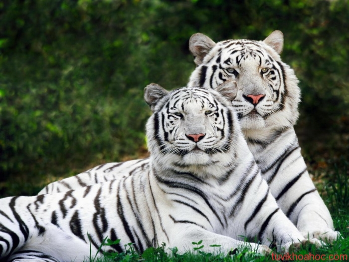
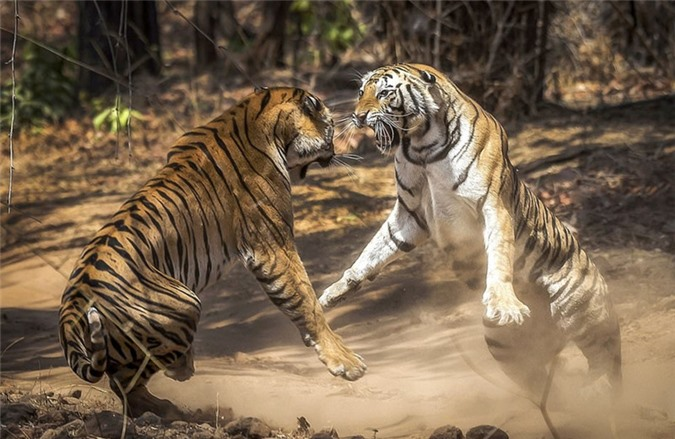

Hổ vằn
Hổ, còn gọi là cọp, hùm, kễnh, khái, ông ba mươi hay chúa sơn lâm (danh pháp hai phần: Panthera tigris) là 1 loài động vật có vú thuộc họ Mèo (Felidae), và là một trong bốn loại "mèo lớn" thuộc chi Panthera.[4] Hổ là một loại thú dữ ăn thịt sống, chúng dễ nhận biết nhất với các sọc vằn dọc sẫm màu trên bộ lông màu đỏ cam với phần bụng dưới sáng hơn. Hổ là động vật to lớn nhất trong họ Mèo và là động vật lớn thứ 3 trong các loài thú ăn thịt (sau gấu trắng và gấu nâu). Hổ là một trong những loài động vật có biểu tượng lôi cuốn và dễ nhận biết nhất trên thế giới. Chúng nổi bật trong thần thoại và văn hóa dân gian cổ đại và tiếp tục được miêu tả trong các bộ phim và văn học hiện đại, xuất hiện trên nhiều lá cờ, phù hiệu áo giáp và làm linh vật cho các đội thể thao. Hổ là biểu tượng quốc gia của Ấn Độ, Bangladesh, Malaysia và Hàn Quốc.
Phần lớn các loài hổ sống trong rừng và đồng cỏ (những khu vực mà khả năng ngụy trang của chúng phù hợp nhất). Trong số các loại mèo lớn, chỉ có hổ và báo đốm Mỹ (jaguar) là bơi tốt, và thông thường người ta hay thấy hổ tắm trong ao, hồ và sông. Hổ kém mèo nhà và báo hoa mai về khả năng leo trèo. Hổ đi săn đơn lẻ, thức ăn của chúng chủ yếu là các động vật ăn cỏ cỡ trung bình như hươu, nai, lợn rừng, trâu, v.v. Tuy nhiên chúng cũng có thể bắt các loại mồi cỡ to hay nhỏ hơn nếu hoàn cảnh cho phép. Hổ có tập tính lãnh thổ cao và nói chung là một loài săn mồi đơn độc nhưng có nhiều đặc điểm xã hội, đòi hỏi các khu vực sinh sống tiếp giáp rộng lớn, hỗ trợ các nhu cầu của nó đối với con mồi và nuôi dưỡng con cái. Những con hổ con ở với mẹ của chúng trong khoảng hai năm, trước khi chúng trở nên tự lập và rời khỏi phạm vi nhà của mẹ chúng để tìm lãnh thổ riêng của mình. Hổ là một trong số nhiều loài động vật ăn thịt nằm ở mắt xích cuối cùng của các chuỗi thức ăn trong hệ sinh thái tự nhiên. Chúng có tuổi thọ khoảng 20 năm.
Hổ từng có phạm vi phân bố rộng từ Vùng Đông Anatolia thuộc Thổ Nhĩ Kỳ ở phía tây đến lưu vực sông Amur, và ở phía nam từ chân đồi của dãy Himalaya đến đảo Bali ở quần đảo Sunda. Kể từ đầu thế kỷ 20, quần thể hổ đã mất ít nhất 93% phạm vi lịch sử của chúng và đã bị tuyệt chủng ở Tây và Trung Á, từ các đảo Java và Bali, và ở các khu vực rộng lớn ở Đông Nam và Nam Á và Trung Quốc. Quần thể hổ ngày nay bị chia cắt, trải dài từ rừng ôn đới Siberia đến rừng nhiệt đới và cận nhiệt đới ở tiểu lục địa Ấn Độ và Sumatra. Hổ được liệt kê là loài có nguy cơ tuyệt chủng trong Sách đỏ IUCN kể từ năm 1986. Tính đến năm 2015, quần thể hổ hoang dã toàn cầu được ước tính có khoảng từ 3.062 đến 3.948 cá thể trưởng thành, giảm khoảng 100.000 (95%) so với đầu thế kỷ 20, với hầu hết các quần thể còn lại xảy ra trong các khu vực nhỏ bị cô lập với nhau. Những lý do chính cho sự suy giảm số lượng hổ bao gồm phá hủy môi trường sống, phân mảnh môi trường sống và nạn săn trộm. Hổ thường bị săn bắt để lấy da, xương, hay các bộ phận khác. Điều này, cùng với việc chúng thường sống ở một số nơi đông dân trên Trái Đất, đã gây ra những xung đột đáng kể với con người.